Методические рекомендации представляют собой особым образом структурированную информацию, определяющую порядок, логику и акценты изучения какой-либо темы, проведения занятия, мероприятия.
Данные рекомендации предназначены обучающимся ООО и СОО при подготовке к ГИА. Умение решать задачи на оптимизацию помогает найти такое решение, которое даст наилучший ожидаемый результат представителям самых разных специальностей.
1. Задачи на перебор всех вариантов данной ситуации и выбор наилучшего (оптимального) варианта, решаемые арифметически
Задача 1
Семья из трех человек планирует поехать из Санкт-Петербурга в Вологду. Можно ехать поездом, а можно — на своей машине. Билет на поезд на одного человека стоит 660 рублей. Автомобиль расходует 8 литров бензина на 100 километров пути, расстояние по шоссе равно 700 км, а цена бензина равна 19 рубля за литр. Сколько рублей придется заплатить за наиболее дешевую поездку на троих?
Решение:
1. 660∙3=1980(р) — потратит семья из трех человек на поезде
2. 8∙7∙19=1064(р) — потратит семья, если поедет на машине — наименьшее
Ответ: 1064 рубля.
Задача 2
От дома до дачи можно доехать на автобусе, на электричке или на маршрутном такси. В таблице показано время, которое нужно затратить на каждый участок пути.
Вид транспорта
До остановки
Время в пути
От остановки до дачи
Автобус
15 мин
2ч 15мин
5 мин пешком
Электричка
25 мин
1ч 45мин
20 мин пешком
Маршрутное такси
25 мин
1ч 35мин
40 мин пешком
Решение:
1. 15мин+2ч 15мин+5мин=2ч 35мин — можно доехать от дома до дачи на автобусе
2. 25мин+1ч 45мин+20мин=2ч 30мин — можно доехать от дома до дачи на электричке — наименьшее. 2ч 30мин = 2,5часа
3. 25мин+1ч 35мин+40мин=2ч 40мин — можно доехать от дома до дачи на маршрутном такси.
Ответ: 2,5часа
Задача 3
Клиент хочет арендовать автомобиль на сутки для поездки протяженностью 500 км. В таблице приведены характеристики трех автомобилей и стоимость их аренды. Помимо аренды клиент обязан оплатить топливо для автомобиля на всю поездку.
Автомобиль
Топливо
Расход топлива (л на 100 км)
Цена топлива (за литр)
Арендная плата (руб. за 1 сутки)
А
Дизельное
7
19 рублей
3700
Б
Бензин
10
22 рублей
3200
В
Газ
14
14 рублей
3200
Решение:
1. 7∙5∙19+3700=4365(р) — заплатит клиент за автомобиль А
2. 10∙5∙22+3200=4300(р) — заплатит клиент за автомобиль Б
3. 14∙5∙14+3200=4180(р) — заплатит клиент за автомобиль В. — наименьшая
Ответ: 4180 рублей.
Задача 4
При строительстве сельского дома можно использовать один из двух типов фундамента: каменный или бетонный. Для каменного фундамента необходимо 9 тонн природного камня и 9 мешков цемента. Для бетонного фундамента необходимо 7 тонн щебня и 50 мешков цемента. Тонна камня стоит 1 600 рублей, щебень стоит 780 рублей за тонну, а мешок цемента стоит 230 рублей. Сколько рублей будет стоить материал для фундамента, если выбрать наиболее дешевый вариант?
Решение:
Рассмотрим два варианта:
1. Стоимость каменного фундамента складывается из стоимости камня 9 · 1600 = 14 400 руб., а также стоимости цемента 9 · 230 = 2070 руб. и составляет 2070 + 14 400 = 16 470 руб. – наименьшая
2. Стоимость бетонного фундамента складывается из стоимости цемента 50 · 230 = 11 500 руб., а также стоимости щебня 7 · 780 = 5460 руб. и составляет 5460 + 11 500 = 16 960 руб.
Ответ: 16 470 рублей.
Задача 5
Мебельный салон заключает договоры с производителями мебели. В договорах указывается, какой процент от суммы, вырученной за продажу мебели, поступает в доход мебельного салона.
Фирма-производитель
Процент от выручки
Примечания
«Альфа»
7%
Изделия ценой до 20 000 руб.
«Альфа»
2%
Изделия ценой свыше 20 000 руб.
«Бета»
3%
Все изделия
«Омикрон»
5,5%
Все изделия
В прейскуранте приведены цены на четыре софы:
Фирма-производитель
Изделие
Цена
«Альфа»
Софа «Анжелина»
14 000 руб.
«Альфа»
Софа «Дженнифер»
21 000 руб.
«Бета»
Софа «Ума»
18 000 руб.
«Омикрон»
Софа «Кейт»
15 500 руб.
Решение:
Рассмотрим все варианты:
1. При продаже софы «Анжелина» по цене 14 000 руб. Доход салона составит 14 000 0,07 = 980 руб. – наибольшая 2. При продаже софы «Дженнифер» по цене 21 000 руб. Доход салона составит 21 000 0,02 = 420 руб. 3. При продаже софы «Ума» по цене 18 000 руб. Доход салона составит 18 000 0,03 = 540 руб. 4. При продаже софы «Кейт» по цене 15 500 руб. Доход салона составит 15 500 0,055 = 852,5 руб.
Поэтому для салона наиболее выгодна продажа софы «Анжелина» фирмы «Альфа», доход от которой составит 980 рублей
Ответ: 980 рублей.
Задача 6
В трёх салонах сотовой связи один и тот же смартфон продаётся в кредит на разных условиях. Условия приведены в таблице.
Салон
Стоимость смартфона (руб.)
Первоначальный взнос (в % от стоимости)
Срок кредита (мес.)
Сумма ежемесячного платежа (руб.)
Эпсилон
24 100
15
6
3680
Дельта
24 200
25
6
3280
Омикрон
25 000
25
12
1620
Решение:
Рассчитаем стоимость покупки с доставкой в трёх салонах связи:
В среднем гражданин А. в дневное время расходует 125 кВт∙ч электроэнергии в месяц, а в ночное время — 155 кВт∙ч электроэнергии. Раньше у А. в квартире был установлен однотарифный счетчик, и всю электроэнергию он оплачивал по тарифу 2,6 руб. за кВт∙ч. Год назад А. установил двухтарифный счeтчик, при этом дневной расход электроэнергии оплачивается по тарифу 2,6 руб. за кВт∙ч, а ночной расход оплачивается по тарифу 0,7 руб. за кВт∙ч. В течение 12 месяцев режим потребления и тарифы оплаты электроэнергии не менялись. На сколько больше заплатил бы А. за этот период, если бы не поменялся счетчик? Ответ дайте в рублях.
Решение:
1. При использовании одно тарифного счётчика, гражданин А. платил в месяц(125 кВт ч + 155 кВт ч) 2,6 руб. за 1 кВт ч = 728 руб.Поэтому за 12 месяцев он платил 728 · 12 = 8736 руб. 2. При использовании двухтарифного счётчика, гражданин А. платит в месяц125 кВт ч 2,6 руб. + 155 кВт ч 0,7 руб. = 433,5 руб.
Поэтому за 12 месяцев он заплатит 433,5 руб. 12 = 5202 руб. Установка нового типа счётчика позволяет экономить 8736 руб. − 5202 руб. = 3534 руб. в год.
Ответ: 3534 рублей.
Задача 8
Для изготовления книжных полок требуется заказать 45 одинаковых стекол в одной из трех фирм. Площадь каждого стекла 0,3 м². В таблице приведены цены на стекло, а также на резку стекол и шлифовку края. Сколько рублей будет стоить самый дешевый заказ?
Строительный подрядчик планирует купить 10 тонн облицовочного кирпича у одного из трех поставщиков. Вес одного кирпича 5 кг. Цены и условия доставки приведены в таблице. Во сколько рублей обойдется наиболее дешевый вариант покупки?
Поставщик
Цена кирпича (руб. за шт.)
Стоимость доставки (руб.)
Специальные условия
А
50
7500
Нет
Б
52
6000
Доставка бесплатная, если сумма заказа превышает 100 000 руб.
В
54
5000
Доставка со скидкой 50%, если сумма заказа превышает 125 000 руб.
Решение:
Необходимо купить 10000 : 5 = 2000 кирпичей.
Рассмотрим все варианты.
1. При покупке у поставщика A стоимость заказа складывается из стоимости кирпича 50 · 2000 = 100 000 руб. и стоимости доставки. Всего 100 000 + 7500 = 107 500 руб. 2. При покупке у поставщика Б стоимость заказа складывается из стоимости кирпича 52 · 2000 = 104 000 руб. и доставка бесплатна. – наименьшее 3. При покупке у поставщика В стоимость заказа складывается из стоимости кирпича 54 · 2000 = 108 000 руб. и стоимости доставки и равна 108 000 + 5000 = 113 000 руб.
Ответ: 104 000 руб.
Задача 10
Для того чтобы связать свитер, хозяйке нужно 400 граммов шерстяной пряжи синего цвета. Можно купить синюю пряжу по цене 60 рублей за 50 граммов, а можно купить неокрашенную пряжу по цене 50 рублей за 50 граммов и окрасить её. Один пакетик краски стоит 10 рублей и рассчитан на окраску 200 граммов пряжи. Какой вариант покупки дешевле? В ответе напишите, сколько рублей будет стоить эта покупка.
Решение:
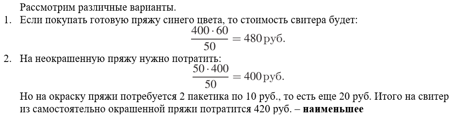
Ответ: 420 рублей.
2. Математическое моделирование экономических задач на оптимизацию, приводящее к исследованию уравнения или функции
Задача 1
На дачном участке нужно провести водопровод длиной 167 м. Имеются трубы длиной 5 м и 7 м. Сколько нужно использовать тех и других труб, чтобы сделать наименьшее количество соединений (трубы не резать)?
Т.о, надо взять 21 трубу длиной по 7 метров и 4 трубы длиной по 5 метров
Ответ: 21 труба по 7 метров и 4 трубы по 5 метров.
Задача 2
Необходимо произвести отделку здания, имеющего форму прямоугольного параллелепипеда объёмом 432 м³. Отделка стены здания, примыкающей к внутреннему строению, обходится в 1000 руб. за квадратный метр. Отделка трех фасадных стен обходится в 2000 руб. за квадратный метр. А заливка крыши, форма которой является квадратом, обходится в 7000 руб. за квадратный метр. Найдите размеры здания, отделочные работы которого при данных условиях являются наименьшими по стоимости и найдите эту стоимость.
Решение:
Математическая модель:
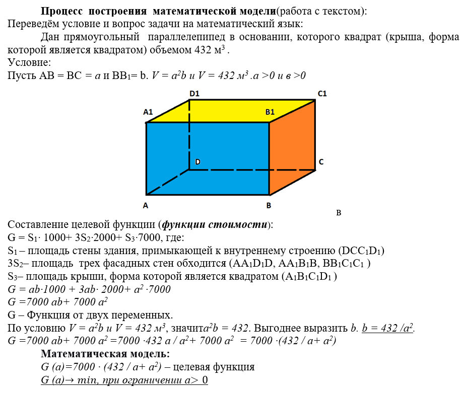
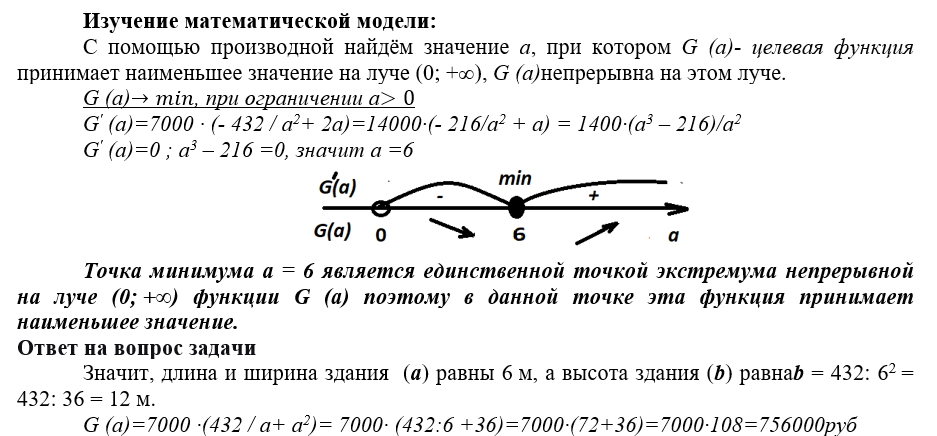
Ответ: 6 м, 6 м, 12 м; 756000 рублей.
Задача 3
Вадим является владельцем двух заводов в разных городах. На заводах производятся абсолютно одинаковые товары при использовании одинаковых технологий. Если рабочие на одном из заводов трудятся суммарно t² часов в неделю, то за эту неделю они производят t единиц товара. За каждый час работы на заводе, расположенном в первом городе, Вадим платит рабочему 200 рублей, а на заводе, расположенном во втором городе, — 300 рублей. Вадим готов выделять 1 200 000 рублей в неделю на оплату труда рабочих. Какое наибольшее количество единиц товара можно произвести за неделю на этих двух заводах?
Решение:
Математическая модель:
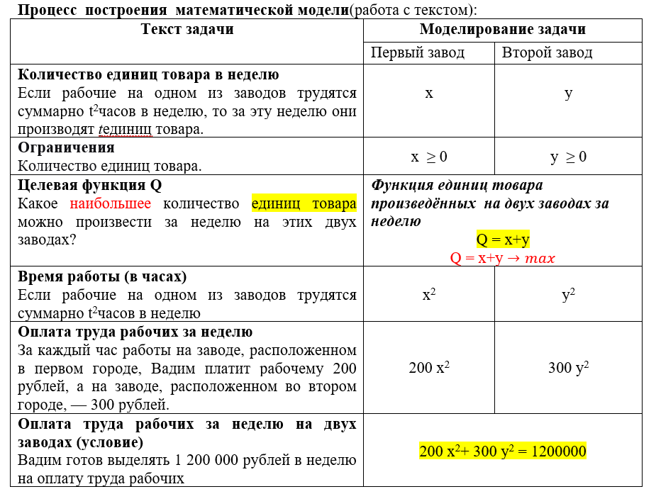
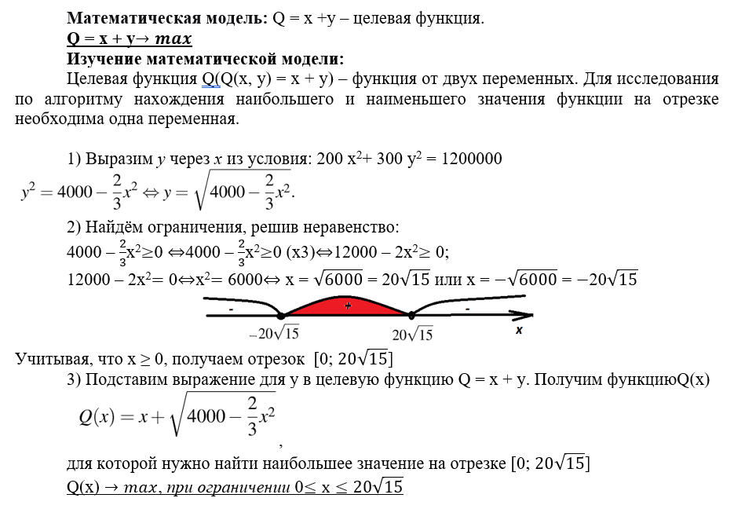
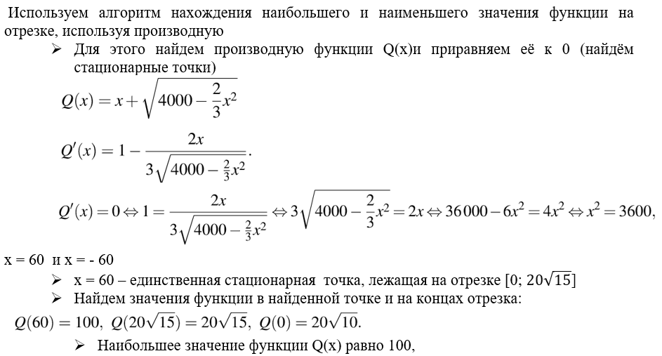
Ответ на вопрос задачи
Наибольшее количество единиц товара равно 100.
Ответ: 100.
Задача 4
Два велосипедиста равномерно движутся по взаимно перпендикулярным дорогам по направлению к перекрестку этих дорог. Один из них движется со скоростью 40 км/ч и находится на расстоянии 5 км от перекрестка, второй движется со скоростью 30 км/ч и находится на расстоянии 3 км от перекрестка. Через сколько минут расстояние между велосипедистами станет наименьшим? Каково будет это наименьшее расстояние?
Решение:
Исследование f(t)при помощи производной:
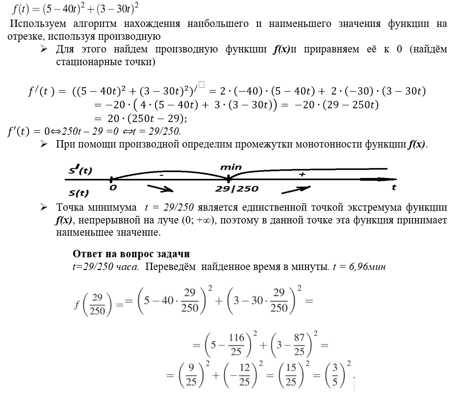
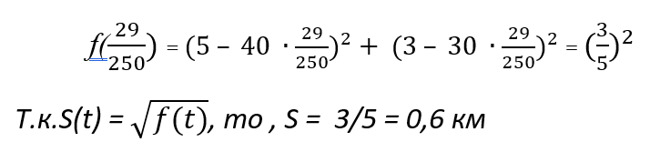
Ответ: 6,96 мин; 0,6 км.
Задача 5
Консервный завод выпускает фруктовые компоты в двух видах тары — стеклянной и жестяной. Производственные мощности завода позволяют выпускать в день 90 центнеров компотов в стеклянной таре или 80 центнеров в жестяной таре. Для выполнения условий ассортиментности, которые предъявляются торговыми сетями, продукции каждого вида должно быть выпущено не менее 20 центнеров. В таблице приведены себестоимость и отпускная цена завода за 1 центнер продукции для обоих видов тары.
Вид тары
Себестоимость 1 центнера
Отпускная цена 1 центнера
Стеклянная
1500 руб
2100 руб
Жестяная
1100 руб
1750 руб
Предполагая, что вся продукция завода находит спрос (реализуется без остатка), найдите максимально возможную прибыль завода за один день (прибылью называется разница между отпускной стоимостью всей продукции и её себестоимостью).
Решение:
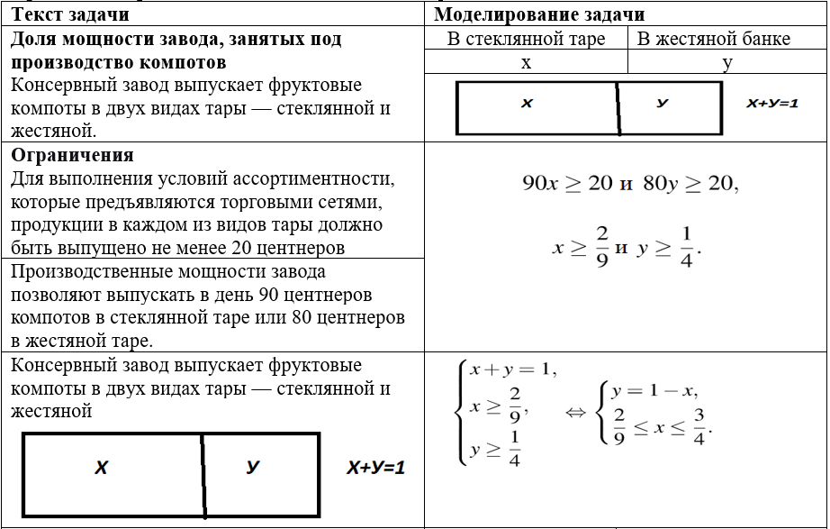
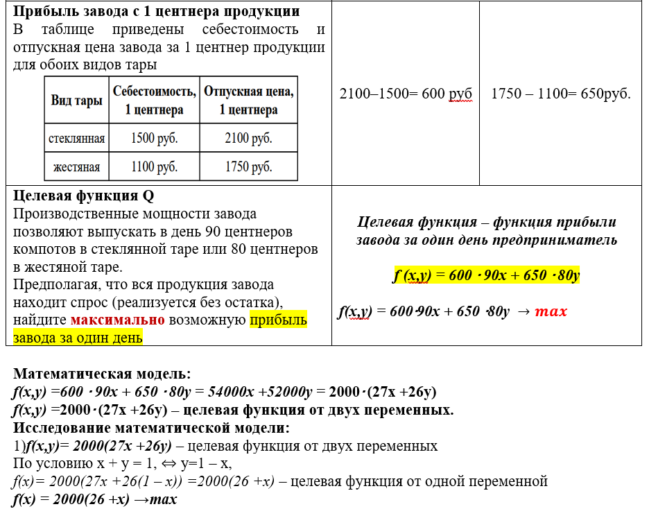
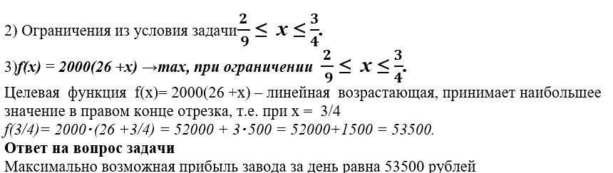
Ответ: 83333 рубля.
Задача 6
Производство x тысяч единиц продукции обходится в q = 0,5х² +4х + 7 млн рублей в год. При цене p тыс. рублей за единицу годовая прибыль от продажи этой продукции (в млн. рублей) составляет px - q. При каком наименьшем значении p через четыре года суммарная прибыль может составить не менее 100 млн. рублей?
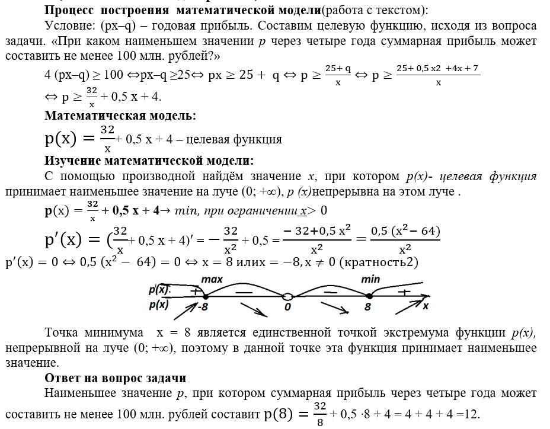
Ответ: 12.
Задача 7
Предприниматель купил здание и собирается открыть в нем отель. В отеле могут быть стандартные номера площадью 30 квадратных метров и номера «люкс» площадью 40 квадратных метров. Общая площадь, которую можно отвести под номера, составляет 940 квадратных метров. Предприниматель может распределить эту площадь между номерами различных типов, как хочет. Обычный номер будет приносить отелю 4000 рублей в сутки, а номер «люкс» — 5000 рублей в сутки. Какую наибольшую сумму денег сможет заработать в сутки на своем отеле предприниматель?
Решение:
Математическая модель:
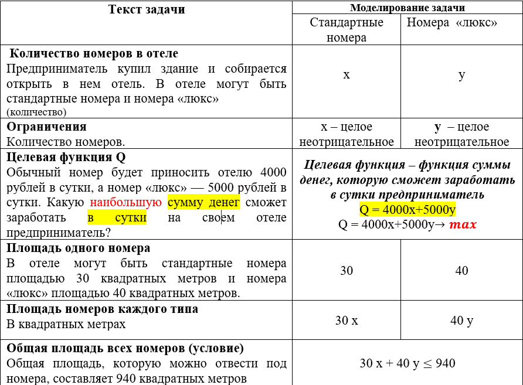
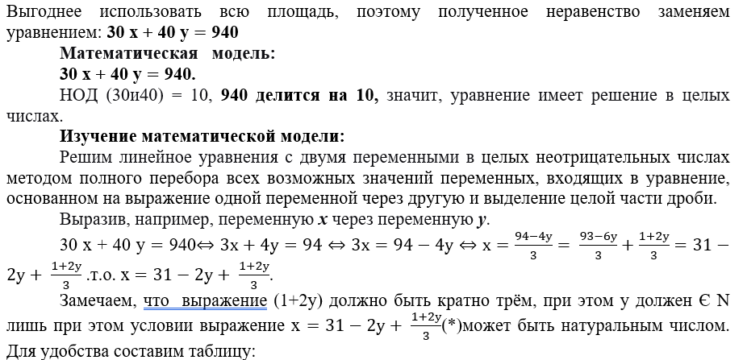
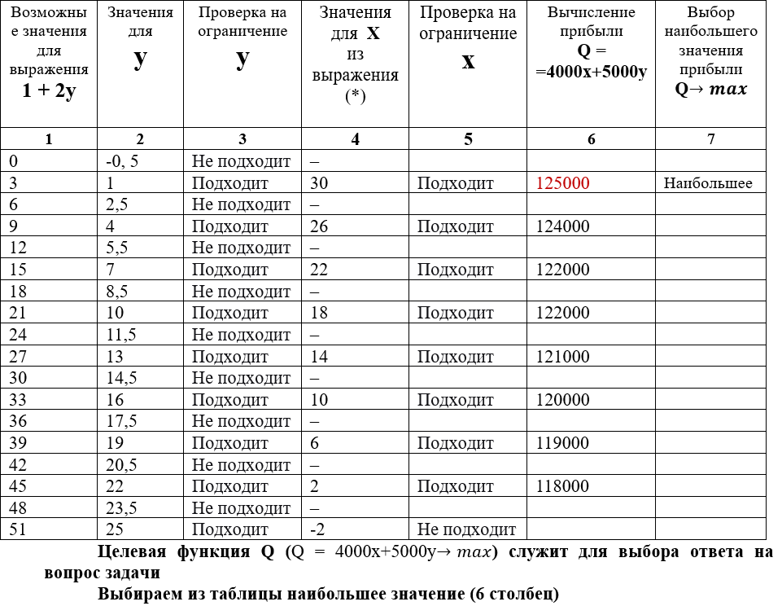
Ответ: 125000 рублей.
3. Задачи для самостоятельного решения
Задача 1
В распоряжении начальника имеется бригада рабочих в составе 24 человек. Их нужно распределить на день на два объекта. Если на первом объекте работает t человек, то их суточная зарплата составляет 4t² у. е. Если на втором объекте работает t человек, то их суточная зарплата составляет t² у. е. Как нужно распределить на эти объекты бригаду рабочих, чтобы выплаты на их суточную зарплату оказались наименьшими? Сколько у. е. в этом случае придется заплатить рабочим?
Решение:
Решение будет доступно после вашей попытки самостоятельного решения.
Задача 2
Фабрика, производящая пищевые полуфабрикаты, выпускает блинчики со следующими видами начинки: ягодная и творожная. В данной ниже таблице приведены себестоимость и отпускная цена, а также производственные возможности фабрики по каждому виду продукта при полной загрузке всех мощностей только данным видом продукта.
Вид начинки
Себестоимость (за 1 тонну)
Отпускная цена (за 1 тонну)
Производственные возможности
ягоды
70 тыс. руб.
100 тыс. руб.
90 (тонн в мес.)
творог
100 тыс. руб.
135 тыс. руб.
75 (тонн в мес.)
Для выполнения условий ассортиментности, которые предъявляются торговыми сетями, продукции каждого вида должно быть выпущено не менее 15 тонн. Предполагая, что вся продукция фабрики находит спрос (реализуется без остатка), найдите максимально возможную прибыль, которую может получить фабрика от производства блинчиков за 1 месяц.
Решение:
Решение будет доступно после вашей попытки самостоятельного решения.
Задача 3
Производство x тысяч единиц продукции обходится в q = 2x² + 4x + 7 миллионов рублей в год. При цене p тыс. рублей за единицу годовая прибыль от продажи этой продукции (в млн. рублей) составляет px - q. При каком наименьшем значении p через шесть лет суммарная прибыль может составить не менее 150 млн. руб. при некотором значении x?
Решение:
Решение будет доступно после вашей попытки самостоятельного решения.
Задача 4
Алексей вышел из дома на прогулку со скоростью v км/ч. После того, как он прошел 6 км, из дома следом за ним выбежала собака Жучка, скорость которой была на 9 км/ч больше скорости Алексея. Когда Жучка догнала хозяина, они повернули назад и вместе возвратились домой со скоростью 4 км/ч. Найдите значение v, при котором время прогулки Алексея окажется наименьшим. Сколько при этом составит время его прогулки?
Решение:
Решение будет доступно после вашей попытки самостоятельного решения.